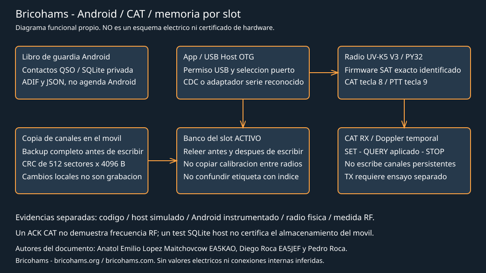

Comprehensive validation: UV-K5 V3, Android, and Bricohams firmware
Authors: Anatol Emilio Lopez Maitchovcow EA5KAO, Diego Roca EA5JEF, and Pedro Roca, Bricohams founders and board members. Information: https://bricohams.org and https://bricohams.com.
Initial review: 26-10-2026. Audit in progress; this is not a certificate of operation or a completed exhaustive review. Notices and attributions for third-party code, photos, and documents are retained.
Release identification
It is not enough for two APKs to show 0.8.1-beta: the commit, APK SHA-256, signature, and source hashes must identify exactly the release tested.
| Release | Identity | Evidence |
|---|---|---|
| Initial working tree | Base 42fa5e014b270b929b58f7fd2fee2a28f482d1c0, local changes | Android host, lint, and APK checked during this review |
| Published main inspected | 01c58563e6507d17bd2bec612ef669840abfeddb | Isolated review without replacing local changes; includes General/POTA/SOTA and the new pass list |
| APK installed on phone | Unidentified | No phone visible in ADB; not checked |
| Current SAT slot firmware | User reports slot 3 | No radio port detected; index, bank, CRC, and version pending |
Results from the isolated published review: 93 Android host tests passed, zero failures/errors, lint with no errors and 13 warnings, debug APK built. SHA-256 of that rebuild: b739992a1b4cba67fdd87e97efdf5408e84f549068b51043d854da094ed1152d. This is not the hash of an APK downloaded from the website or installed on a phone. The local CRC correction is not included in that main rebuild.
The 13 lint warnings in both reviews concern two newer test dependency versions, five English dictionary warnings for “satellite,” one plural candidate, three typographic hyphens, one ellipsis, and the icon shape. Dependencies and branding are not changed to hide them.
The published website is not necessarily identical to the local tree. The contents of the downloadable APK cannot be inferred from a guide's text. Tests from the local base must not be attributed to the published revision or an unidentified APK.

This drawing is an original functional representation, not an electrical schematic. It does not show inferred internal connections, component values, or voltage levels. Pin and memory maps are in the atlas.
Evidence levels
- Reviewed source: shows intended implementation, not execution.
- Host/JVM/Robolectric test: verifies the specific simulated scenarios.
- Instrumented Android: requires an identified device/emulator.
- Real radio: requires identified version, slot, bank, and configuration.
- External RF/electrical measurement: requires instrument, connection, and procedure.
A write ACK does not replace readback, persistence after reboot, or an RF measurement. A desktop SQLite test does not certify the phone's memory. The final status for each scenario must state its evidence level; do not turn “not run” into “passed.”
Corrected finding: Android backup CRC
QuanshengMemory.verifyFlash requested 0x073E for 2097152 bytes at once. The reference command limits each query to 4096 bytes. The mock allowed the impossible range and hid the error. The web version already checked by sectors; Android needed the same correction.
The local correction queries all 512 sectors with address/length/status verified and compares each sector's CRC against the bytes read. It returns the total local CRC only after all sectors have been checked. A failure, including at the last sector 0x1ff000, blocks the backup and does not enable writing. It does not delete existing backups, calibrate the radio, or write sectors.
The mock now enforces 4096 bytes and checks that every sector is requested. A test was added for a corrupt last sector and rejection of an incomplete range before commands are sent. Local-base host tests: 92 passed after adding limits, cancellation, and channel-screen tests, zero failures/errors; lint with no errors and 13 warnings. The debug APK builds, but this correction is not published or installed on a phone.
SHA-256 of the locally rebuilt APK after these corrections: cd9d3bfd3bfe0405be23995dd906aae63614ec9d38de1a1ff8cea1997156ab25. This hash replaces the earlier local rebuild; it does not identify the published or installed APK.
The manifest generated by build-android.ps1 was also corrected: it no longer lists CAT PTT, SSTV TX, and channel programming as nonexistent, since they are experimentally implemented. This does not certify these features.
Android editor cancellation and limits
Another issue was found while following the lifecycle: closing the screen queued transport closure behind the active task. As a result, a long backup or write could continue sending blocks after the interface had declared the session ended.
The connection now retains a session generation and checks that it remains active and in the foreground before each exchange. Queued tasks also check their generation before starting. Closure remains on the worker to release the transport in order, but does not enable new commands for a cancelled operation. A response to an already-sent command may still be pending or the command may have been applied: rollback is not promised. A timeout or cancellation requires reconnecting and taking a new backup. Errors also close the transport and clear the in-memory reference, not just the backup permission: tapping Backup again does not reuse an invalid connection. A screen test injects a transport failure, checks closure, and verifies that the second attempt sends no more commands.
Tests simulate cancellation after hiding the first channel: the next block is not sent and an incomplete record is not shown again. They also cancel the backup after its first Flash block and check that the next one is not queried and CRC is not reported as verified. Physical Flash reads require identification and validate ranges by subtraction to avoid address + length overflow. The last valid block is checked. CRC cases reject short/long responses, incorrect address, sector length, or status before the next sector.
Contacts: scope and criteria
Contacts are logbook QSOs, not radio DMR contacts or the Android phone address book. This project's UV-K5 V3 radio is not a DMR terminal. There is no ContactsProvider integration.
| Case | Required check |
|---|---|
| Add | Save callsign, UTC, frequency, mode, reports, and notes; verify ID and every field |
| Persistence | Fully close, reopen, and restart phone; remaining visible is not enough |
| Edit | Same ID, one record only, unedited fields intact |
| Delete | Cancel confirmation to retain record; confirm to delete only the selected one |
| Search | Case, Unicode, no matches, over 50 records; export not truncated |
| General/POTA/SOTA | Log selection and persistence; station/reference fields; isolation between logs |
| Duplicates | Warning within a log, explicit confirmation; do not merge QSOs from different activities |
| ADIF | Preview, cancel without writing, lengths, unpreserved fields, UTC, deduplication |
| JSON | UTF-8 round trip, IDs, conflicts, and rollback; restore does not delete prior records |
| Errors | Full storage, cancelled or unwritable URI, close/rotation, incomplete import |
| Privacy | Private backups; do not add real callsigns, locations, or databases to the repository |
Existing host tests cover SQLite and reopening, Unicode, CRUD, atomic import, and restoration. Phone cases remain pending. LoTW export does not certify signing, upload, or TQSL acceptance.
Instrumented RadioStoreTest tests no longer open or clear the user's bricohams.db. Each test remaps that name to a private instrumentation-<UUID>.db and deletes only its own database at the end. They include reopening after edit/delete/JSON restore, repeated restoration without duplicates, and invalid import without persisting partial records. The test APK and lint build successfully. These tests have not been run on a phone or emulator; compilation does not show that assertions passed.
Channels and slot isolation
The current Android editor edits existing FM channels: it is not equivalent to the web's full CRUD and does not allow inferring additions/deletions/copies between slots. Do not use it to claim DMR contact management.
Before each physical test:
- Identify V3/PY32 hardware and exact firmware, not just the profile name.
- Read multiboot inventory, label, and CRC; record internal index and visible label separately. Do not assume “slot 3” means index 3.
- Confirm the active bank and make a complete verified backup to disk.
- Choose a test channel from the active bank without replacing user data.
- Test name/RX/TX/CTCSS/DCS/power/bandwidth/TX lock, avoiding physical TX.
- Reread all bytes and compare protected regions and calibration.
- Reboot and verify persistence; switch slots and check other banks retain their hashes. Restore and verify the original.
- Disconnection, timeout, and rejected block must close the session and require reread/backup; a power loss must not be presented as an atomic transaction.
The write command must hide affected attributes, write records/names, and restore attributes before readback. Do not modify the calibration map or restore data from another radio.
CAT in SAT RX and Android
CAT RX is temporary and distinct from writing channels. F4HWN v6.1 alone does not guarantee the Bricohams CAT module is present. A valid QUERY and expected capabilities are required, with the SAT RX app open and CAT enabled using key
- The initial test does not require PTT.
| Case | Expected result and evidence |
|---|---|
| Identify | Correct version and photo/screen of active slot; do not infer from name |
| QUERY | Active session, consistent capabilities and frequency |
| SET RX VHF/UHF | Pending ACK followed by applied QUERY; compare display and external frequency |
| Out of band | Explicit rejection, no tuning change |
| Noise/CRC/sequence | Bounded rejection or timeout; do not execute an unintended subsequent command |
| STOP | Remote disabled and restoration confirmed; also check screen exit |
| OTG disconnected | Session closed, explicit message, no delayed tuning |
| Rotation/background | No duplicate worker or SET after leaving |
| SGP4/Doppler pass | Observer/TLE/time identified; compare prediction and RX updates |
| Persistent separation | Channels and calibration unchanged before/after CAT |
| PTT lease | Separate test with authorization and appropriate load/instrumentation, not an antenna in the open by default |
For PTT, check local arming with key 9, denial for lock/band/state, release by STOP/disconnection, lease expiry, and 120 s limit. TX is not tested automatically, and power, harmonics, or frequency are not certified without instruments. Connecting CAT alone does not give the phone the radio's speaker/microphone.
Hardware modifications: compatibility and limits
Compatibility of a V1 modification does not carry over to V3 just because the case is shared. The MCU, memory, and RF are different. The consulted K1 teardown confirms PY32F071, 128 KB Flash, 16 KB SRAM, and 2 MB SPI memory; it does not demonstrate a particular modification across all V3 board revisions.
| Family | Classification for this audit | Evidence needed before recommendation |
|---|---|---|
| External antenna/adapter | Accessory, not a board modification | Exact connector, mechanical load, SWR, and band; RX gain does not guarantee safe TX |
| USB-C/OTG/data | Existing interface | Real data cable, host/permission, power, and enumeration |
| Kenwood USB-serial cable | Conditional on adapter and pinout | Levels and suitable cable; do not connect RS-232 directly |
| Expanded V1 EEPROM | Not directly applicable | V3 uses SPI Flash; do not insert EEPROM by analogy |
| V1 SI4732/SSB/HF | Not verified for V3 | Board, power, bus, space, PY32 firmware, and RX tests |
| LNA/satellite filters | Not verified | Schematic for that revision, impedance, selectivity, saturation, TX isolation |
| TX low-pass filter | Not verified | Frequency, power, losses, SWR, and harmonic measurement into a load |
| Coil/27 MHz changes | Not extrapolatable from V1 | Schematic, measured values, stability, and compliance; do not publish invented values |
| Expand SPI Flash | Unsupported by current maps | JEDEC, voltage, pinout, commands, sectors, bootloader, and every reader/writer |
| ESP32/coprocessor | Adaptation project, not plug-and-play | Buses and arbitration, levels, power, and V3-specific driver |
| SWD/debugging | Conditional on board and firmware | Confirmed pads, levels, backup, and recovery without erasing calibration |
| Audio/discriminator | Not verified | Analog schematic, isolation, load, and test without injecting voltage into ADC/DAC |
| Battery/charging/power | Outside current validation | Do not change cells/protection or raise power using unverified instructions |
The radio was not opened or modified during this audit. There is no evidence to certify every possible modification. Complete internal connection diagrams require photos of both sides of the exact board, unpowered continuity tracing, and values/packages identified by qualified personnel; they cannot be derived from a block diagram. Battery, RF, and calibration protections are not bypassed.
Documentation and firmware generation
Primary sources:
- V3 hardware atlas and maps.
- Builds, BHA1/BHT1 formats, and independent resident.
- Android: storage, CAT, channels, permissions, and limitations.
- Configuration and bank security.
- Quansheng guide.
- Release status.
The comprehensive review must cross-check all documents and generated HTML against code and manifests, not fix only the main page. Release histories retain their old results and are not rewritten to attribute new validations to them.
For each build, record: commit/dirty state, toolchain and flags, licenses, Flash-RAM-stack map/size, source/BIN/APK hashes, format and load address, test matrix, known errors, and recovery route. Issues already found include CRC beyond the firmware limit, an overly permissive mock, stale Android manifest, differences between published/local main, resident timebase, and lack of a physical app-transfer driver. The resident guide documents the corrections and does not confuse reproducible compilation with validated execution.
Regression for this review
After integrating the guide into help, local server, and installer list: 283 web tests passed, zero failures, and npm run check passed. This evidence belongs to the modified local tree, not published main. Android instrumentation and lintDebug also build successfully; no APK has been installed and no commands have been sent to the radio.
Device checks show only COM3 Intel AMT SOL and an empty ADB list. COM3 is not used as a substitute for the Quansheng port. Radio enumeration and phone ADB authorization are required before running the physical tests described.
Documentation cross-check performed
| Document or group | Cross-check and correction in this review | Limit |
|---|---|---|
| Architecture | Removed the claim that Quansheng channel writing does not exist; distinguishes prior reading from pending tests | Does not certify protocols for other equipment |
| Release status | Preserved historical matrix and added identification of local base versus published main | Old results are not rewritten |
| Android | Sector CRC, cancellation, close after errors, and isolated instrumentation database | Local manual does not automatically describe the latest published APK |
| V3 atlas | Modification matrix without V1 extrapolation, sources, and absence of a complete verified schematic in consulted materials | No electrical measurements or continuity checks on this unit |
| Firmware library | AnyTone/Android/audit links and separation of F4HWN derivatives from the BHA1 platform | Cataloging is not installing or validating |
| Quansheng guide | Reviewed viewer, catalog, slots, and DFU sections; retained scope and CRC of earlier tests | SAT startup and channel writing remain pending |
| Configuration, OpenGD77, and AnyTone | Cross-checked backups, local editing, and write limits by family | A Quansheng does not validate DMR hardware or convert JSON/CSV to RDT |
| Examples and ARDF | Provenance, licenses, and distinction between official ARDF and Bricohams module | Third-party binaries or RF modifications are not certified |
| Bricohams | Corrected identity of derived line; independent resident and formats documented separately | Physical USB/Flash and integrated resident RAM budget are missing |
| Karina, Dim0s, and third-party index | Corrected historical recording status; distinguished similarly named ZIPs of 2296162 and 2161962 bytes with different hashes | No verified Karina source or equivalence between the ZIPs |
| Deployment, ADR, and branding | Separated dedicated-origin recommendation from actual shared Pages; retained historical URLs with clarification; compared Android orange theme with assets | No automatic data migration or on-device visual validation |
| Community and licenses | Negative searches described with scope, not as proof of absence; lack of verified redistribution permission is not presented as a universal ruling | Not all remote licenses were re-audited |
| HTML and packaging | Guides regenerated and checked with link, server, Pages/exporter, and installer tests | No new release published |
This table records the scope covered; it does not claim a line-by-line review of all documentation or external repositories. Remaining sections and sources must be checked before the requested exhaustive review is closed. Absence of observed issues is not converted into certification that all components work.
The portable platform's storage scratch was reduced from 5184 to 4160 bytes to meet the combined BHA1 limit, saving 1024 bytes without reducing valid packets. Nine CTest tests pass, including JS/C transfer and maximum-size load with 3072 bytes of code plus 1024 bytes of data. This is not yet a measurement of resident RAM/stack with USB/Flash integrated.
Local revalidation on 27-10-2026
In the current working tree, npm test completes with 285 passing tests and zero failures; npm run check also completes successfully. The Android tests could not be rerun: Gradle found Java 8, while Android Gradle Plugin 8.7.3 requires Java 11 or later, and no other installed JDK was found. The CTest suites could not be rebuilt either: CMake found neither NMake nor an available C compiler. These blockers concern the validation environment and are not code test results. No instrumentation, USB, radio, or RF tests were run.
Pending closure and certification
No certificate is issued until the installed APK, phone/Android, firmware, and slot/bank are identified; physical tests run without losses; private evidence is retained; and failures/repairs are recorded with retesting. A successful software audit does not certify RF compliance, electrical safety, or every third-party modification.